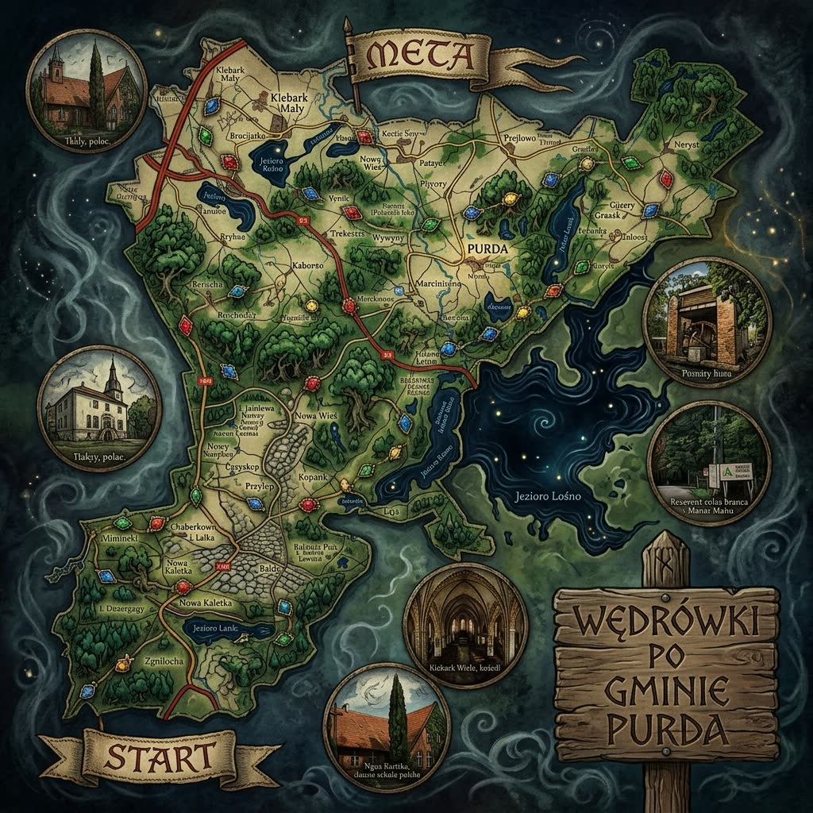

Do odkrycia Odkryte Trakt

Mapa zawiera dziesięć punktów odpowiadających miejscowościom gminy Purda. Każdy punkt jest przyciskiem — otwiera kartę miejsca z pytaniem, a w trybie Bestiariusz kartę stwora lub opowieści związanej z tym miejscem.
Borzysław
Łowca z Warmii
⚔ Topór okuty żelazem · 🛡 Tarcza ze świętego dębu · ᚱ Runiczne amulety